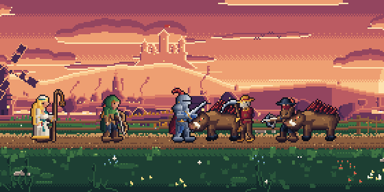
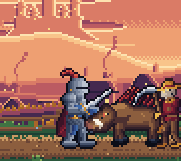
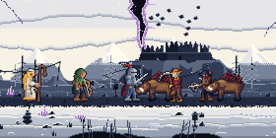
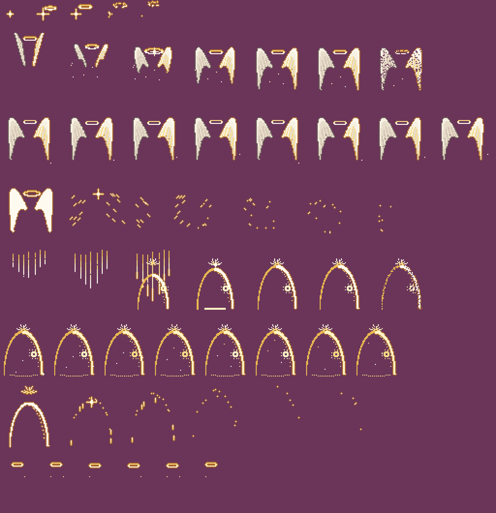

La de ahora es una gema de cristal azul que se cierra con paneles y se rompe en esquirlas: se lee como cristal, no como una bendición.


El libro destella en oro y suelta un pequeño halo. Sobre el protegido bajan dos alas de luz desde arriba y se abren a su espalda, y un halo cae sobre su cabeza con un destello. Mientras dura el escudo, las alas respiran un poco detrás de él, sin taparle, y de las plumas se escapa alguna mota. Cuando el escudo se gasta, las alas destellan en blanco y estallan en plumas de luz que caen.

Caen rayos del cielo sobre el protegido y se cierran en un arco de luz dorada que le rodea, con rayos cortos en la cima y un pequeño sello solar en la cara que mira al enemigo (ocho rayos, nunca una cruz, que es la señal de curar). Mientras dura el escudo, un brillo sube por el arco, suben motas por dentro y se ve un disco de luz a sus pies. Cuando se gasta, la luz no se rompe: se deshace en motas y rayos que suben.
De arriba abajo: el destello del libro (común a las dos) · A: bajan, se quedan, estallan · B: bajan, se queda, se deshace · el escudo menor (Santuario profundo, Segundo aliento): solo el halo.
